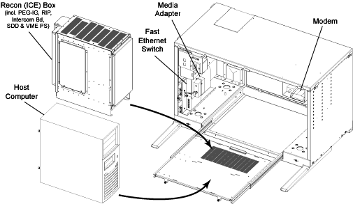
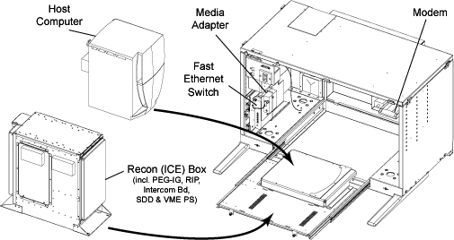

Operating Documentation
Direction 5114045-800, Rev# 10
LightSpeed 4.X Service Information (Advanced)
Operating Documentation |
| Last Revised on: | Sept 3, 2004 |
The LightSpeed 4.X CT scanners are equipped with one of three varieties of Console:
GRE Xtream Console (a.k.a. GOC3)
Global Console - Linux (GC-Linux, a.k.a. GOC2)
Global Console - Octane2 (GC-Octane2, a.k.a., GOC1)
| For GRE Xtream console theory, refer to GRE Theory. | |
Though functionally identical, the GOC1 and GOC2 Operator Consoles differ in physical layout (see Illustration 1 and Illustration 2).
The most significant changes from the GC-Octane2 Console to the GC-Linux console are:
Replacement of the IRIX OS-based SGI Workstation (Octane2) with a Linux OS-based Workstation.
Replacement of the MOD as an archive device with a DVD-RAM drive.
The console is divided into two functional subsystems, one is called the Host and the other the Scan Reconstruction Unit (SRU) . The Host subsystem consists of the following hardware:
Host computer
Mouse, keyboard, trackball & monitors
System disks
MOD drive (housed in SCSI tower, on Global Console - Linux)
CD-ROM drive
Network devices (switches and converters)
Serial I/O (input/output)
DVD-RAM (Global Console - Linux only), housed in SCSI tower
The Scan Reconstruction Unit (SRU) subsystem consists of the following hardware:
ICE box
Pegasus Image Generator
Motorola Computer
DIP
Scan Data Disk
Communications between these functional subsystems occur via network and serial connections. Communications between the host and SRU take place primarily using network channel. Using the network channel allows sharing of resources on the host disk by the SRU (client). Serial communications are used for the downloading and “flashing” memory (PROM) in the SRU.
Table 1 lists the key components covered in this overview, as well as their acronyms.
Table 1: Naming Conventions
| Common Name | Alias/Acronym |
|---|---|
| Linux OS Computer | Host Computer |
| Octane2 Computer | |
| DAS Interface Processor | DIP |
| Pegasus Image Generator | PIG, PEG-IG |
| Scan Data Disk | SDD |
| System Control Interface Module | SCIM |
| VME Chassis/enclosure and Boards | ICE Box |
| Recon Interface Processor (Motorola Board) | RIP |
| Scan Recon Computer | SRU |
| Small Computer System Interface | SCSI |
| Data Acquisition System Manager | DASM |
Illustration 1: Locations of Key Console Components (Global Console - Linux)

Illustration 2: Locations of Key Console Components (Global Console - Octane2)
